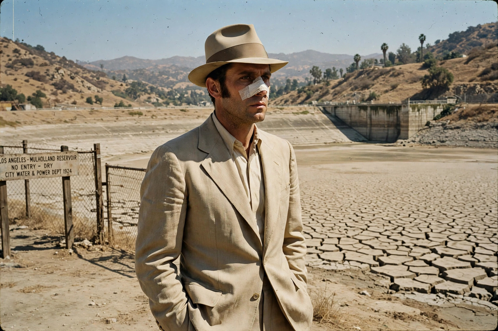

Chinatown (1974 film)
Chinatown is a 1974 American neo-noir mystery film directed by Roman Polanski from a screenplay by Robert Towne, produced by Robert Evans and starring Jack Nicholson, Faye Dunaway and John Huston. Set in 1937 Los Angeles, it follows private detective J. J. "Jake" Gittes as an adultery case unravels into a conspiracy over water, land and incest reaching the city's founding elite. It is widely considered one of the greatest films ever made and the defining neo-noir.

| Chinatown | |
|---|---|
| Directed by | Roman Polanski |
| Written by | Robert Towne |
| Produced by | Robert Evans |
| Starring | Jack Nicholson, Faye Dunaway, John Huston |
| Cinematography | John A. Alonzo |
| Music | Jerry Goldsmith |
| Released | 1974 (Paramount Pictures) |
| Budget / box office | $6 million / $29.2 million |
Plot
Gittes is hired by a woman claiming to be Evelyn Mulwray to follow her husband Hollis, chief engineer of the city's water department. When Hollis is found drowned during a drought — and the real Evelyn (Dunaway) appears, threatening to sue — Gittes realises he has been set up. His investigation exposes a plot by Evelyn's father, tycoon Noah Cross (Huston), to seize control of the city's water and irrigate worthless valley land he secretly owns. Evelyn's "sister" Katherine proves to be both her sister and her daughter by Cross. In the climax in Chinatown, Evelyn is shot dead by police while fleeing with Katherine, Cross takes the girl, and Gittes is led away with the famous epitaph for futility: "Forget it, Jake. It's Chinatown."
Production
Towne's script, often taught as a model screenplay, drew on the California water wars and the figure of water engineer William Mulholland (echoed in "Mulwray"). Polanski insisted on the tragic ending over Towne's happier one and shot the film in luminous period colour rather than black and white. Jerry Goldsmith's mournful trumpet score was written in about ten days after the original was rejected.
Reception and legacy
Nominated for eleven Academy Awards, it won for Towne's Best Original Screenplay. It was selected for the National Film Registry in 1991 and places near the top of the AFI's greatest-films and mystery lists. A sequel, The Two Jakes (1990), directed by Nicholson, was a critical and commercial disappointment.
See also
Recreated from memory as part of the muse-webcrawl project.